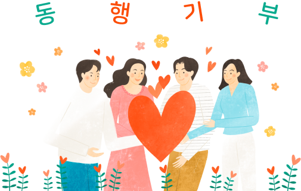

동부건설은 대한민국을 대표하는 지속가능한 종합건설기업으로 도약하기 위한 비전을 수립하였고, 이를 바탕으로 지속가능한 사회공헌을 위한 정책을 수립하고 있습니다. 대한민국의 미래를 이끌어갈 미래세대의 유아, 어린이, 청소년 등이 건강하게 행복한 하루를 걱정없이 보내고, 자신의 꿈을 실현할 수 있도록 동부건설은 함께 동행(同行)하며 다양한 기부활동을 지속적으로 이어 나갈 것입니다.
사회공헌 실적
| 구분 | 2020년 | 2021년 | 2022년 | |
|---|---|---|---|---|
| 기부금(천원) | 734,862 | 662,695 | 719,002 | |
| 기부단체수 | 계 | 25 | 19 | 32 |
| 교육 | 15 | 9 | 25 | |
| 사회복지 | 8 | 7 | 6 | |
| 기타 | 2 | 3 | 1 | |